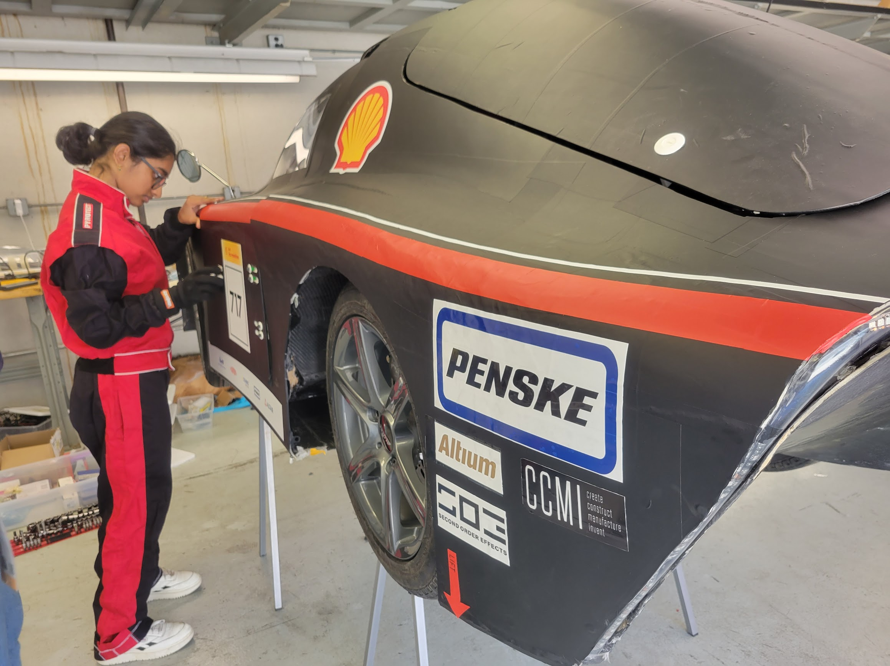
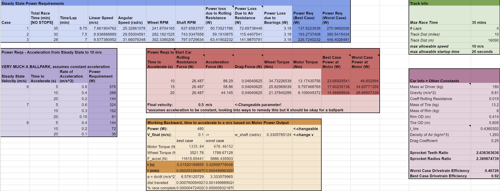
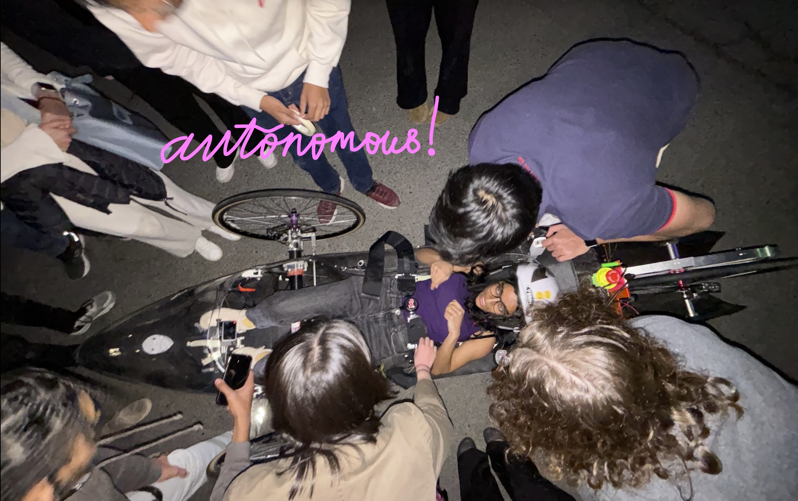

Cornell Electric Vehicles (CEV) is a fully student run project team dedicated to making as efficient and innovative of an electric vehicle possible. In my final year on the team, we also introduced full autonomy-self driving as a goal of the team. Over the course of 3 years, I served as a member of the mechanical autonomy team, then as a Drivetrain member and project lead as well as the team's Manufacturing lead. And lastly, I served as the Mechanical Team Lead in my senior year. On the side, I also designed some merch, helped with social media/recruitment and, oh yeah! Drove the car!
 Exploded view of the 2023 Vehicle CAD - aka the Chicken Coupe!
Exploded view of the 2023 Vehicle CAD - aka the Chicken Coupe!
As the lead of the Mechanical team, I was in charge of around 30 students and responsible for the vehicle's chassis, drivetrain, steering system and autonomy initiative. To keep things running smoothly, myself and project leads set up weekly system meetings and semesterly design reviews to provide consistent and widespread technical feedback. Members also got individual feedback every few months to help them get the most out of the team. We also kept the team organized with both full-team and Mechanical GANTT charts. Lastly, I redesigned our CAD sharing system and our documentation protocols to push for more consistent documentation to aid future members.
I also worked with the other team leads (Electrical, Software, Operations, Full Team Leads) to ensure smooth integration of all systems, testing procedures, and organized the shipment of the vehicle for our yearly competition. Good cooperation skills were key to helping this team run!
A large part of my role as a team lead was managing the onboarding program for new members. I developed several onboarding workshops, including an introduction to CAD, fundamentals of mechanical design, design for manufacturing, and more!
In truth, though, we were all students. There are many ways I can think of wherein I learned from younger members of the team just as much as they learned from me, and I feel that maintaining that sense of equality is key in being a good leader.
 A photo of me with the car at competition Video of the Drivetrain in action shortly after its first assembly!
Video of the Drivetrain in action shortly after its first assembly!
I am very grateful to have gotten a chance to work on the team's very first "Urban Concept" vehicle for the Shell Eco Marathon Competition, a stark contrast to the much smaller, three-wheeled "Prototype Vehicles" they had been making for years before that. It was without a doubt the team's most ambitious move yet, started just as I joined the team.
As a member and later co-lead of the Drivetrain subteam, I focused first on doing calculations to select the motor for the vehicle, and then on redesigning the Chain and Sprocket transmission not only to optimize it for manufacturing (which was without a doubt an extremely iterative process, even into the manufacturing phase!), but also for cost and weight.
Selecting the motor meant not only doing calculations on the motor torque, wheel RPM, and other physical characteristics needed to power the vehicle through the 10-mile race- but also working with and electrical specifications and limits that had to be met. This involved, first and foremost, understanding the principle forces that would be acting on the car, in particular rolling resistance versus drag- where the former had more of an impact on startup, and the latter at steady-state conditions.
Using this data, we were able to select an appropriate 24V Brushless DC motor for the job. However, a big lesson learned came from understanding the effiency not only of the motor, but also of energy losses within the vehicle's mechanical systems... We ended up later swapping the 24V motor for a stronger, 48V motor in order to meet speed requirements to finish the race on time and improve factor of safety.
 Iterable spreadsheet created to help with torque calculations.After the motor was selected, I worked on redesigning the chain and sprocket transmission, as well as its interfaces with the differential, which we as a team selected over a belt drive for efficiency and load-bearing capability.
It was an interesting challenge to reduce weight of the part without sacrificing functionality and strength. I also had to look into bearing selection, both for supporting parts and for the sprocket itself, which had a one-way bearing in the center so that torque transmission was only allowed in one direction to allow a "burn and coast" strategy. A technical report can be found below.
As part of the drivetrain work that I did, I optimized several parts for manufacturing once that process began. It was a large learning curve for us all- it was one thing to design parts, but another to go into the machine shop and do it ourselves.
As the most-trained member of the team in the machine shop, and one of only a handful of students selected to be CNC machinists in the school, I took on the role of manufacturing lead on CEV, the first to do so. Not only did I organize machine shop shifts and mentor new members to help them get comfortable in the shop, I also helped to redesign dozens of parts to be more manufacturable, getting rid of complex features that were there largely for looks in order to make more parts easily machinable for new members on a manual mill or lathe, as well as save time.
This role taught me tons about design for manufacturing, which I turned into onboarding education for future members. But it also gave me necessary confidence in the machine shop that would help me in industry/internships later on. See my machining portfolio back on the homepage for photos of specific parts
One of my first projects on the team involved working with a partner to spearhead the team's autonomous braking. We researched and prototyped several designs, both in terms of mechanical brakes and an autonomous method of actuating the hydraulic brake pedal. We ended up deciding on the latter, which taught me about selection of motors/linear actuators.
While I did not carry this project beyond the prototyping phase (this was when I switched to Drivetrain), I stayed on as a consulant of sorts, and the team finally carried out full Level-1 autonomy across electrical, mechanical, and software in January 2024 using many aspects of the system I originally designed. It also gave me testing experience.
 Photos from a test before our official Level-1 autonomy demo.For submission for an award in the 2024 Shell Eco-Marathon, I wrote a proposal for a Carbon-Footprint reduction plan involving having the team use carbon fiber scraps to design carbon-fiber rims for a future vehicle which would not obly improve performance, but reduce waste.
The paper won 2nd Place, and a $1500 prize. The PDF can be found below: